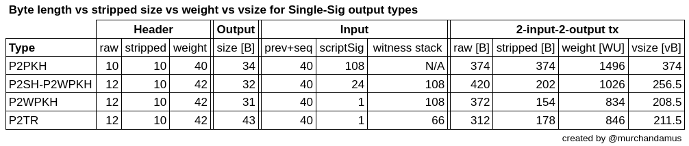

How do virtual size, stripped size and raw size compare between legacy address formats and native segwit?
This answer states that SegWit doesn't reduce transaction size. If this is true, why is it cheaper to send a SegWit transaction?
Asked by: ecurrencyhodler
Question Link
Answer
Answered by: Murch
Let's compare a 2-input and 2-output transaction for single-sig output types. I'll refer to the byte length of the transaction as "raw size" , the transaction without its witness data as "stripped size", and the size-equivalent when accounting for the witness discount as "virtual size".

Table showing the detailed data
-
P2PKH – Pay to Public Key Hash has no witness data, so raw size is equal to stripped size is equal to virtual size. A P2PKH transaction with two inputs and two outputs has 374 bytes (= 374 vbytes).
-
P2SH-P2WPKH – Pay to Script Hash-wrapped Pay to Witness Public Key Hash (aka "wrapped segwit") locks funds to a P2SH output, but the input's redeemscript contains a witness program that redirects the evaluation to the witness stack. The content of the witness stack is the same as a P2PKH
scriptSig. A P2SH-P2WPKH transaction with two inputs and two outputs has a raw size of 420 bytes, a stripped size (removing witness data) of 202 bytes, and a virtual size of 256.5 vbytes. -
P2WPKH – Pay to Witness Public Key Hash (aka single-sig v0 native segwit) does not need the P2SH indirection, but directly resolves a witness program. It has the same witness stack as a P2SH-P2WPKH input. A P2WPKH transaction with two inputs and two outputs has a raw size of 372 bytes, a stripped size of 154 bytes and a virtual size of 208.5 vbytes.
-
P2TR – Pay to Taproot (v1 native segwit (keypath-spend)) also directly resolves a witness program. Since the witness program already contains a public key instead of a pubkey hash, the witness stack is smaller by the public key, but the output script is larger. A P2TR transaction with two inputs and two outputs has a raw size of 312 bytes, a stripped size of 178 bytes, and a virtual size of 211.5 vbytes.
The raw size corresponds to the data footprint of the transaction on disk or the bandwidth cost to transmit it. We see that P2SH-P2WPKH is actually the biggest in raw size by a margin. P2WPKH and P2PKH are very close to each other in raw size with the legacy format P2PKH being slightly smaller in input size, but slightly bigger in output size. P2TR has the smallest data footprint.
The virtual size corresponds to the blockweight which determines the fees and how many transactions can fit in a block. After applying the weighing that the witness is subject to, P2WPKH has the smallest weight, closely followed by P2TR, followed by P2SH-P2WPKH and the legacy format P2PKH counts as the heaviest.
Size calculations
Transaction headers list the transaction version (4 B), the count of inputs (VarInt, usually 1 B, but up to 9 B), the count of outputs (varInt, usually 1 B, but up to 9 B), and the locktime (4 B). For segwit transactions, we add a witness marker (1 WU) and a witness flag (1 WU) that pertain to the whole transaction.
Every input must indicate the UXTO it's spending per an outpoint (txid+vout = 32+4 B), have a sequence value (4 B), and have an input script (scriptSig). For non-segwit output types, the scriptSig contains script arguments and/or a redeemscript to satisfy the output script (scriptPubKey). For wrapped segwit inputs, the scriptSig consists of a redeemscript that contains a witness program which redirects to the Witness Stack as the final script. For native segwit outputs, the scriptSig is empty which is indicated by a scriptSig length of 0. Per the segwit rules this is interpreted as a validation redirection to the Witness Stack. Note that if a transaction has at least one segwit input, there must be a Witness Stack for every input, with non-segwit inputs having a length-zero Witness Stack (i.e. just one byte to indicate the length of 0).
Outputs consist of an amount of satoshis (8 B) and an output script (scriptPubKey). Outputs don't have witness data.
P2PKH
TxHeader: 10 B = 40 WU
Input¹: 148 B = 592 WU
Output: 34 B = 136 WU
For legacy formats, the raw size, stripped size and virtual size are all equal because they do not have witness data.
Tx with 2 inputs and 2 outputs:
raw = stripped = vsize = 10 B + 2×148 B + 2×34 B = 374 B = 374 vB
weight = 4×374 vB = 1496 WU
P2SH-P2WPKH
TxHeader: 10 B + 2 WU = 10.5 vB = 42 WU
Input²: 64 B + 108 WU = 91 vB = 364 WU
Output: 32 vB = 128 WU
Tx with 2 inputs and 2 outputs:
raw = 12 B + 2×(64 B + 108 B) + 2×32 B = 420 B
stripped = 10 B + 2×64 B + 2+32 B = 202 B
weight = 42 WU + 2×(4×64 vB + 108 WU) + 2×128 WU = 1026 WU = 256.5 vB
P2WPKH
TxHeader: 10 B + 2 WU = 10.5 vB = 42 WU
Input³: 41 vB + 108 WU = 68 vB = 272 WU
Output: 31 vB = 124 WU
Tx with 2 inputs and 2 outputs:
raw = 12 B + 2×(41 B + 108 B) + 2×31 B = 372 B
stripped = 10 B + 2×41 B + 2×31 B = 154 B
weight = 42 WU + 2×(4×41 vB + 108 WU) + 2×124 WU = 834 WU = 208.5 vB
P2TR
TxHeader: 10 B + 2 WU = 10.5 vB = 42 WU
Input⁴: 41 vB + 66 WU = 57.5 vB = 230 WU
Output: 43 vB = 172 WU
Tx with 2 inputs and 2 outputs:
raw = 12 B + 2×(41 B + 66 B) + 2×43 B = 312 B
stripped = 10 B + 2×41 B + 2×43 B = 178 B
weight = 42 WU + 2×(4×41 vB + 66 WU) + 2×178 WU = 846 WU = 211.5 vB